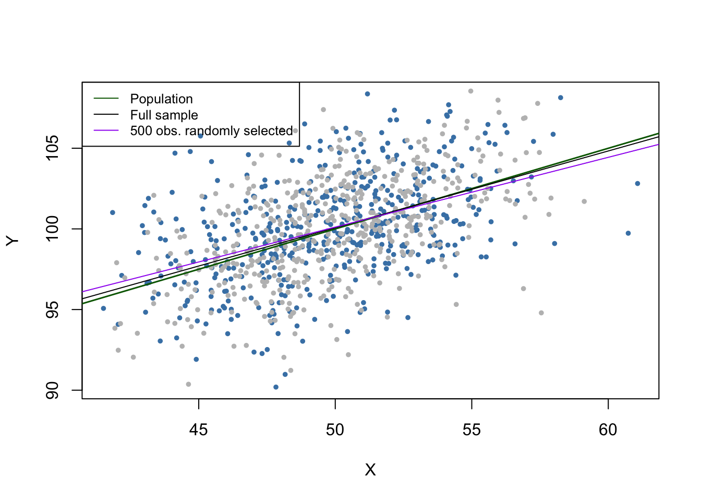
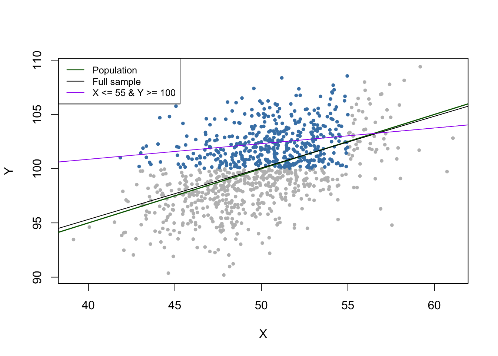

9.2 Threats to Internal Validity of Multiple Regression Analysis
This section treats five sources that cause the OLS estimator in (multiple) regression models to be biased and inconsistent for the causal effect of interest and discusses possible remedies. All five sources imply a violation of the first least squares assumption presented in Key Concept 6.4.
This sections treats:
omitted variable bias,
misspecification of the functional form,
measurement errors,
missing data and sample selection,
simultaneous causality bias.
Beside these threats for consistency of the estimator, we also briefly discuss causes of inconsistent estimation of OLS standard errors.
Omitted Variable Bias
Key Concept 9.2
Omitted Variable Bias: Should I include More Variables in My Regression?
Inclusion of additional variables reduces the risk of omitted variable bias but may increase the variance of the estimator of the coefficient of interest.
We present some guidelines that help deciding whether to include an additional variable:
Specify the coefficient(s) of interest.
Identify the most important potential sources of omitted variable bias by using knowledge available before estimating the model. You should end up with a baseline specification and a set of regressors that are questionable.
Use different model specifications to test whether questionable regressors have coefficients different from zero.
Use tables to provide full disclosure of your results, i.e., present different model specifications that both support your argument and enable the reader to see the effect of including questionable regressors.
By now you should be aware of omitted variable bias and its consequences. Key Concept 9.2 gives some guidelines on how to proceed if there are control variables that possibly allow to reduce omitted variable bias. If including additional variables to mitigate the bias is not an option because there are no adequate controls, there are different approaches to solve the problem:
Misspecification of the Functional Form of the Regression Function
If the population regression function is nonlinear but the regression function is linear, the functional form of the regression model is misspecified. This leads to a bias of the OLS estimator.
Key Concept 9.3
Functional Form Misspecification
A regression suffers from misspecification of the functional form when the functional form of the estimated regression model differs from the functional form of the population regression function. Functional form misspecification leads to biased and inconsistent coefficient estimators. A way to detect functional form misspecification is to plot the estimated regression function and the data. This may also be helpful to choose the correct functional form.
It is easy to come up with examples of misspecification of the functional form: consider the case where the population regression function is \[Y_i = X_i^2,\] but the model used is \[Y_i = \beta_0 + \beta_1 X_i + u_i.\] Clearly, the regression function is misspecified here. We now simulate data and visualize this.
# set seed for reproducibility
set.seed(3)
# simulate data set
X <- runif(100, -5, 5)
Y <- X^2 + rnorm(100)
# estimate the regression function
ms_mod <- lm(Y ~ X)
ms_mod
#>
#> Call:
#> lm(formula = Y ~ X)
#>
#> Coefficients:
#> (Intercept) X
#> 8.11363 -0.04684# plot the data
plot(X, Y,
main = "Misspecification of Functional Form",
pch = 20,
col = "steelblue")
# plot the linear regression line
abline(ms_mod,
col = "red",
lwd = 2)
legend("bottomright",
bg = "transparent",
cex = 0.8,
lwd = 2,
col ="red",
legend = "Linear Regression Line")
It is evident that the regression errors are relatively small for observations close to \(X=-3\) and \(X=3\) but that the errors increase for \(X\) values closer to zero and even more for values beyond \(-4\) and \(4\). Consequences are drastic: the intercept is estimated to be \(8.1\) and for the slope parameter, we obtain an estimate obviously very close to zero. This issue does not disappear as the number of observations is increased because OLS is biased and inconsistent due to the misspecification of the regression function.
Measurement Error and Errors-in-Variables Bias
Key Concept 9.4
Errors-in-Variable Bias
When independent variables are measured imprecisely, we speak of errors-in-variables bias. This bias does not disappear if the sample size is large. If the measurement error has mean zero and is independent of the affected variable, the OLS estimator of the respective coefficient is biased towards zero.
Suppose you are incorrectly measuring the single regressor \(X_i\) so that there is a measurement error and you observe \(\overset{\sim}{X}_i\) instead of \(X_i\). Then, instead of estimating the regression model for the population, which is : \[ Y_i = \beta_0 + \beta_1 X_i + u_i \], we end up estimating the regression model below: \[\begin{align*} Y_i =& \, \beta_0 + \beta_1 \overset{\sim}{X}_i + \underbrace{\beta_1 (X_i - \overset{\sim}{X}_i) + u_i}_{=v_i}. \\ Y_i =& \, \beta_0 + \beta_1 \overset{\sim}{X}_i + v_i. \end{align*}\] where \(\overset{\sim}{X}_i\) and the error term \(v_i\) are correlated. Thus OLS would be biased and inconsistent for the true \(\beta_1\) in this example. One can show that direction and strength of the bias depend on the correlation between the observed regressor, \(\overset{\sim}{X}_i\), and the measurement error, \(w_i =X_i - \overset{\sim}{X}_i\). This correlation in turn depends on the type of the measurement error made.
The classical measurement error model assumes that the measurement error, \(w_i\), has zero mean and that it is uncorrelated with the variable, \(X_i\), and the error term of the population regression model, \(u_i\):
\[\begin{equation} \overset{\sim}{X}_i = X_i + w_i, \ \ \rho_{w_i,u_i}=0, \ \ \rho_{w_i,X_i}=0. \end{equation}\] Then it holds that \[\begin{equation} \widehat{\beta}_1 \xrightarrow{p}{\frac{\sigma_{X}^2}{\sigma_{X}^2 + \sigma_{w}^2}} \beta_1, \tag{9.1} \end{equation}\]
which implies inconsistency as \(\sigma_{X}^2, \sigma_{w}^2 > 0\) such that the fraction in (9.1) is smaller than \(1\). Note that there are two extreme cases:
If there is no measurement error, \(\sigma_{w}^2=0\) such that \(\widehat{\beta}_1 \xrightarrow{p}{\beta_1}\).
If \(\sigma_{w}^2 \gg \sigma_{X}^2\) we have \(\widehat{\beta}_1 \xrightarrow{p}{0}\). This is the case if the measurement error is so large that there essentially is no information on \(X\) in the data that can be used to estimate \(\beta_1\).
The most obvious way to deal with errors-in-variables bias is to use an accurately measured \(X\). If this is not possible, instrumental variables regression is an option. One might also deal with the issue by using a mathematical model of the measurement error and adjust the estimates appropriately: if it is plausible that the classical measurement error model applies and if there is information that can be used to estimate the ratio in equation (9.1), one could compute an estimate that corrects for the downward bias.
For example, consider two bivariate normally distributed random variables \(X,Y\). It is a well known result that the conditional expectation function of \(Y\) given \(X\) has the form \[\begin{align} E(Y\vert X) = E(Y) + \rho_{X,Y} \frac{\sigma_{Y}}{\sigma_{X}}\left[X-E(X)\right]. \tag{9.2} \end{align}\] Thus for \[\begin{align} (X, Y) \sim \mathcal{N}\left[\begin{pmatrix}50\\ 100\end{pmatrix},\begin{pmatrix}10 & 5 \\ 5 & 10 \end{pmatrix}\right] \tag{9.3} \end{align}\] according to (9.2), the population regression function is \[\begin{align*} Y_i =& \, 100 + 0.5 (X_i - 50) \\ =& \, 75 + 0.5 X_i. \tag{9.4} \end{align*}\] Now suppose you gather data on \(X\) and \(Y\), but that you can only measure \(\overset{\sim}{X_i} = X_i + w_i\) with \(w_i \overset{i.i.d.}{\sim} \mathcal{N}(0,10)\). Since the \(w_i\) are independent of the \(X_i\), there is no correlation between the \(X_i\) and the \(w_i\) so that we have a case of the classical measurement error model. We now illustrate this example in R using the package mvtnorm (Genz et al. 2023).
# set seed
set.seed(1)
# load the package 'mvtnorm' and simulate bivariate normal data
library(mvtnorm)
dat <- data.frame(
rmvnorm(1000, c(50, 100),
sigma = cbind(c(10, 5), c(5, 10))))
# set columns names
colnames(dat) <- c("X", "Y")We now estimate a simple linear regression of \(Y\) on \(X\) using this sample data and run the same regression again but this time we add i.i.d. \(\mathcal{N}(0,10)\) errors added to \(X\).
# estimate the model (without measurement error)
noerror_mod <- lm(Y ~ X, data = dat)
# estimate the model (with measurement error in X)
dat$X <- dat$X + rnorm(n = 1000, sd = sqrt(10))
error_mod <- lm(Y ~ X, data = dat)
# print estimated coefficients to console
noerror_mod$coefficients
#> (Intercept) X
#> 76.3002047 0.4755264
error_mod$coefficients
#> (Intercept) X
#> 87.276004 0.255212Next, we visualize the results and compare with the population regression function.
# plot sample data
plot(dat$X, dat$Y,
pch = 20,
col = "steelblue",
xlab = "X",
ylab = "Y")
# add population regression function
abline(coef = c(75, 0.5),
col = "darkgreen",
lwd = 1.5)
# add estimated regression functions
abline(noerror_mod,
col = "purple",
lwd = 1.5)
abline(error_mod,
col = "darkred",
lwd = 1.5)
# add legend
legend("topleft",
bg = "transparent",
cex = 0.8,
lty = 1,
col = c("darkgreen", "purple", "darkred"),
legend = c("Population", "No Errors", "Errors"))
In the situation without measurement error, the estimated regression function is close to the population regression function. Things are different when we use the mismeasured regressor \(X\): both the estimate for the intercept and the estimate for the coefficient on \(X\) differ considerably from results obtained using the “clean” data on \(X\). In particular \(\widehat{\beta}_1 = 0.255\), so there is a downward bias. We are in the comfortable situation to know \(\sigma_X^2\) and \(\sigma^2_w\). This allows us to correct for the bias using (9.1). Using this information we obtain the biased-corrected estimate \[\frac{\sigma_X^2 + \sigma_w^2}{\sigma_X^2} \cdot \widehat{\beta}_1 = \frac{10+10}{10} \cdot 0.255 = 0.51\] which is quite close to \(\beta_1=0.5\), the true coefficient from the population regression function.
Bear in mind that the above analysis uses a single sample. Thus one may argue that the results are just a coincidence. Can you show the contrary using a simulation study?
Missing Data and Sample Selection
Key Concept 9.5
Sample Selection Bias
When the sampling process influences the availability of data and when there is a relation of this sampling process to the dependent variable that goes beyond the dependence on the regressors, we say that there is a sample selection bias. This bias is due to correlation between one or more regressors and the error term. Sample selection implies both bias and inconsistency of the OLS estimator.
There are three cases of sample selection. Only one of them poses a threat to internal validity of a regression study. The three cases are:
Data are missing at random.
Data are missing based on the value of a regressor.
Data are missing due to a selection process which is related to the dependent variable.
Let us jump back to the example of variables \(X\) and \(Y\) distributed as stated in equation (9.3) and illustrate all three cases using R.
If data are missing at random, this is nothing but losing the observations. For example, losing \(50\%\) of the sample would be the same as never having seen the (randomly chosen) half of the sample observed. Therefore, missing data do not introduce an estimation bias and “only” lead to less efficient estimators.
# set seed
set.seed(1)
# simulate data
dat <- data.frame(
rmvnorm(1000, c(50, 100),
sigma = cbind(c(10, 5), c(5, 10))))
colnames(dat) <- c("X", "Y")
# mark 500 randomly selected observations
id <- sample(1:1000, size = 500)
plot(dat$X[-id],
dat$Y[-id],
col = "steelblue",
pch = 20,
cex = 0.8,
xlab = "X",
ylab = "Y")
points(dat$X[id],
dat$Y[id],
cex = 0.8,
col = "gray",
pch = 20)
# add the population regression function
abline(coef = c(75, 0.5),
col = "darkgreen",
lwd = 1.5)
# add the estimated regression function for the full sample
abline(noerror_mod)
# estimate model case 1 and add the regression line
dat <- dat[-id, ]
c1_mod <- lm(dat$Y ~ dat$X, data = dat)
abline(c1_mod, col = "purple")
# add a legend
legend("bottomright",
lty = 1,
bg = "transparent",
cex = 0.8,
col = c("darkgreen", "black", "purple"),
legend = c("Population", "Full sample", "500 obs. randomly selected"))
The gray dots represent the \(500\) discarded observations. When using the remaining observations, the estimation results deviate only marginally from the results obtained using the full sample.
Selecting data randomly based on the value of a regressor has also the effect of reducing the sample size and does not introduce estimation bias. We will now drop all observations with \(X > 45\), estimate the model again and compare.
# set random seed
set.seed(1)
# simulate data
dat <- data.frame(
rmvnorm(1000, c(50, 100),
sigma = cbind(c(10, 5), c(5, 10))))
colnames(dat) <- c("X", "Y")
# mark observations
id <- dat$X >= 45
plot(dat$X[-id],
dat$Y[-id],
col = "steelblue",
cex = 0.8,
pch = 20,
xlab = "X",
ylab = "Y")
points(dat$X[id],
dat$Y[id],
col = "gray",
cex = 0.8,
pch = 20)
# add population regression function
abline(coef = c(75, 0.5),
col = "darkgreen",
lwd = 1.5)
# add estimated regression function for full sample
abline(noerror_mod)
# estimate model case 1, add regression line
id <- which(dat$X >= 45)
dat <- dat[-id, ]
c2_mod <- lm(dat$Y ~ dat$X, data = dat)
abline(c2_mod, col = "purple")
# add legend
legend("topleft",
lty = 1,
bg = "transparent",
cex = 0.8,
col = c("darkgreen", "black", "purple"),
legend = c("Population", "Full sample",expression(paste("Obs.with ",
X <= 45))))
Note that although we dropped more than \(90\%\) of all observations, the estimated regression function is very close to the line estimated based on the full sample.
In the third case we face sample selection bias. We can illustrate this by using only observations with \(X_i<55\) and \(Y_i>100\). These observations are easily identified using the function which() and logical operators: which(dat$X < 55 & dat$Y > 100).
# set random seed
set.seed(1)
# simulate data
dat <- data.frame(
rmvnorm(1000, c(50,100),
sigma = cbind(c(10,5), c(5,10))))
colnames(dat) <- c("X","Y")
# mark observations
id <- which(dat$X <= 55 & dat$Y >= 100)
plot(dat$X[-id],
dat$Y[-id],
col = "gray",
cex = 0.8,
pch = 20,
xlab = "X",
ylab = "Y")
points(dat$X[id],
dat$Y[id],
col = "steelblue",
cex = 0.8,
pch = 20)
# add population regression function
abline(coef = c(75, 0.5),
col = "darkgreen",
lwd = 1.5)
# add estimated regression function for full sample
abline(noerror_mod)
# estimate model case 1, add regression line
dat <- dat[id, ]
c3_mod <- lm(dat$Y ~ dat$X, data = dat)
abline(c3_mod, col = "purple")
# add legend
legend("bottomright",
lty = 1,
bg = "transparent",
cex = 0.8,
col = c("darkgreen", "black", "purple"),
legend = c("Population", "Full sample",expression(paste(X <= 55,"&",
Y >= 100))))
We see that the selection process leads to biased estimation results.
There are methods that allow to correct for sample selection bias. However, these methods are beyond the scope of the book and are therefore not considered here. The concept of sample selection bias is summarized in Key Concept 9.5.
Simultaneous Causality
Key Concept 9.6
Simultaneous Causality Bias
So far we have assumed that the changes in the independent variable \(X\) are responsible for the changes in the dependent variable \(Y\). When the reverse is also true, we say that there is simultaneous causality between \(X\) and \(Y\). This reverse causality leads to correlation between \(X\) and the error in the population regression of interest such that the coefficient on \(X\) is estimated with bias.
Suppose we are interested in estimating the effect of a \(20\%\) increase in cigarette prices on cigarette consumption in the United States using a multiple regression model. This may be investigated using the dataset CigarettesSW which is a part of the AER package. CigarettesSW is a panel data set on cigarette consumption for all 48 continental U.S. federal states from 1985-1995 and provides data on economic indicators and average local prices, taxes and per capita pack consumption.
After loading the data set, we pick observations for the year 1995 and plot logarithms of the per pack price, price, against pack consumption, packs, and estimate a simple linear regression model.
# load the data set
library(AER)
data("CigarettesSW")
c1995 <- subset(CigarettesSW, year == "1995")
# estimate the model
cigcon_mod <- lm(log(packs) ~ log(price), data = c1995)
cigcon_mod
#>
#> Call:
#> lm(formula = log(packs) ~ log(price), data = c1995)
#>
#> Coefficients:
#> (Intercept) log(price)
#> 10.850 -1.213# plot the estimated regression line and the data
plot(log(c1995$price), log(c1995$packs),
xlab = "ln(Price)",
ylab = "ln(Consumption)",
main = "Demand for Cigarettes",
pch = 20,
col = "steelblue")
abline(cigcon_mod,
col = "darkred",
lwd = 1.5)
# add legend
legend("topright",lty=1,col= "darkred", "Estimated Regression Line")
Remember from Chapter 8 that, due to the log-log specification, in the population regression the coefficient on the logarithm of price is interpreted as the price elasticity of consumption. The estimated coefficient suggests that a \(1\%\) increase in cigarette prices reduces cigarette consumption by about \(1.2\%\), on average. Have we estimated a demand curve? The answer is no: this is a classic example of simultaneous causality, see Key Concept 9.6. The observations are market equilibrium which are determined by both changes in supply and changes in demand. Therefore the price is correlated with the error term and the OLS estimator is biased. We can neither estimate a demand nor a supply curve consistently using this approach.
We will return to this issue in Chapter 12 which treats instrumental variables regression, an approach that allows consistent estimation when there is simultaneous causality.
Sources of Inconsistency of OLS Standard Errors
There are two central threats to computation of consistent OLS standard errors:
Heteroskedasticity: implications of heteroskedasticiy have been discussed in Chapter 5. Heteroskedasticity-robust standard errors as computed by the function vcovHC() from the package sandwich produce valid standard errors under heteroskedasticity.
Serial correlation: if the population regression error is correlated across observations, we have serial correlation. This often happens in applications where repeated observations are used, e.g., in panel data studies. As for heteroskedasticity, vcovHC() can be used to obtain valid standard errors when there is serial correlation.
Inconsistent standard errors will produce invalid hypothesis tests and wrong confidence intervals. For example, when testing the null that some model coefficient is zero, we cannot trust the outcome anymore because the test may fail to have a size of \(5\%\) due to the wrongly computed standard error.
Key Concept 9.7 summarizes all threats to internal validity discussed above.
Key Concept 9.7
Threats to Internal Validity of a Regression Study
The five primary threats to internal validity of a multiple regression study are:
Omitted variables.
Misspecification of functional form.
Errors in variables (measurement errors in the regressors).
Sample selection.
Simultaneous causality.
All these threats lead to failure of the first least squares assumption \[E(u_i\vert X_{1i},\dots ,X_{ki}) \neq 0,\] so that the OLS estimator is biased and inconsistent.
Furthermore, if one does not adjust for heteroskedasticity and/or serial correlation, incorrect standard errors may be a threat to internal validity of the study.